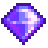

Qi Gem
Jump to navigation
Jump to search
| Qi Gem | |
 |
|
| A special currency honored by Mr. Qi. | |
| Information | |
| Source | Monsters in dangerous Mines or Skull Cavern |
| Sell Price | Cannot be sold |
Qi Gems are obtained by completing challenges in Mr. Qi's walnut room on Ginger Island, and used to buy rewards in the same room. They can also be received from selling Golden Walnuts and can be dropped from monsters in the "dangerous" versions of the Mines and Skull Cavern. Stick Bugs in the Dangerous Mines are guaranteed to drop a Qi Gem when slain, with a 50% chance of dropping an extra one. The amount of Qi Gems that a player has is displayed directly underneath the Player's name in the skills tab.
Tips
Two easy ways to convert Qi Gems into gold are:
- Buying Hoppers and deconstructing them using deconstructors into radioactive bars which sell for
 3,000g each (4,500g with the Blacksmith profession). This method is more profitable, but takes more time and requires deconstructors. Using this method, each Qi Gem is worth 300g (450g with the Blacksmith profession).
3,000g each (4,500g with the Blacksmith profession). This method is more profitable, but takes more time and requires deconstructors. Using this method, each Qi Gem is worth 300g (450g with the Blacksmith profession). - Buying Qi Seasoning which sell for 200g each. Using this method, each Qi Gem is worth 200g.
Rewards Shop
- Main article: Qi's Walnut Room#Stock
| Image | Name | Description | Price |
|---|---|---|---|
| Junimo Chest | Through the power of forest magic, every Junimo Chest links to the same stash. The first time it's purchased, you must get two for |
||
| Horse Flute | Playing this flute will summon your horse. Only works outdoors. | ||
| Pierre's Missing Stocklist | Pierre might be interested in this. | ||
| Hopper | Items placed inside will automatically be loaded into the machine in front of it. | ||
| Enricher (4) | Place on a sprinkler and load with fertilizer to automatically apply it when planting seeds nearby. | ||
| Pressure Nozzle (4) | Place on a sprinkler to increase its watering range. | ||
| Deconstructor | Destroys crafted items, but salvages their most valuable material. | ||
| Key To The Town | Allows access to all buildings in town, at any time of day. | ||
| Galaxy Soul | Forge 3 of these into a Galaxy weapon to unleash its final form. | ||
| Mushroom Tree Seed | Place this on your farm to plant a mushroom tree. | ||
| Magic Bait (20) | Allows you to catch fish from any season, time, or weather, from whichever type of water you cast into. | ||
| Qi Seasoning (10) | Just a dash will elevate any dish to extraordinary heights. Automatically applied when cooking. | ||
| Mr. Qi's Hat | A replica of Mr. Qi's iconic hat. | ||
| Aquatic Sanctuary | Can be placed inside your house. | ||
| Heavy Tapper Recipe | A recipe to make Heavy Tapper | ||
| Hyper Speed-Gro Recipe | A recipe to make Hyper Speed-Gro | ||
| Deluxe Fertilizer Recipe | A recipe to make Deluxe Fertilizer | ||
| Hopper Recipe | A recipe to make Hopper | ||
| Magic Bait Recipe | A recipe to make Magic Bait | ||
| Mini-Shipping Bin | Items placed in it will be included in the nightly shipment. | ||
| Exotic Double Bed | Can be placed inside your house. | ||
| Blue Grass Starter Recipe | A recipe to make Blue Grass Starter | ||
| Fireworks (Red) | An old tradition for celebrations and festivities. Handle with care! | ||
| Fireworks (Purple) | An old tradition for celebrations and festivities. Handle with care! | ||
| Fireworks (Green) | An old tradition for celebrations and festivities. Handle with care! | ||
| Qi Gem (2) | A special currency honored by Mr. Qi. Becomes available once Ginger Island is fully upgraded and the player has extra golden walnuts |
||
| Golden Egg | A very rare and special egg with a solid gold shell. Becomes available once perfection is achieved |
Bugs
- Because the on-screen gem count display contains only 3 digits, having 1000 or more Qi Gems causes the display to show only the last 3 digits.
- Shadow Snipers and Putrid Ghosts do not count as Dangerous Monsters and will not drop Qi Gems unless the Mines are at difficulty level 2 ("Danger in the Deep" quest and Shrine of Challenge both active).